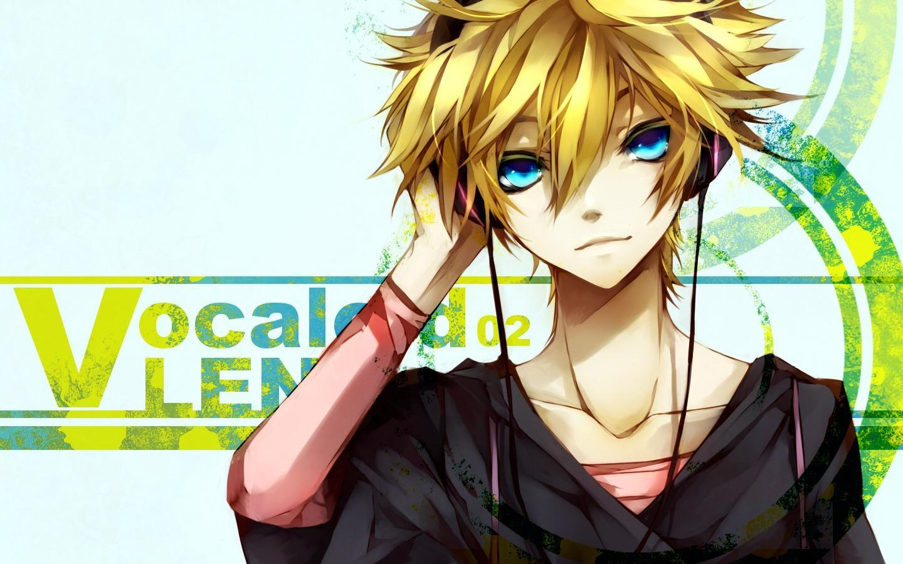

Hatsune Miku é a Vocaloid mais famosa do mundo. Lançada em 2007 pela Crypton Future Media, sua voz é baseada na atriz Saki Fujita. Ela se tornou um fenômeno global com shows holográficos e milhões de músicas criadas por fãs.
Meiko foi uma das primeiras Vocaloids japonesas, lançada em 2004. Sua voz é mais madura e forte, sendo muito usada em músicas com estilo mais sério.
Luka é conhecida por sua voz suave e por cantar tanto em japonês quanto em inglês. Ela tem um estilo mais calmo e elegante comparado a outros Vocaloids.

Len é frequentemente apresentado ao lado de sua "irmã" Rin. Sua voz é energética e ele aparece em músicas animadas e dramáticas.
Rin é conhecida por sua voz forte e alegre. Ela aparece em muitas músicas populares e é uma das Vocaloids mais queridas pelos fãs.
Kaito é um dos poucos Vocaloids masculinos mais antigos. Sua voz é mais suave e ele costuma aparecer em músicas mais calmas e emocionais.